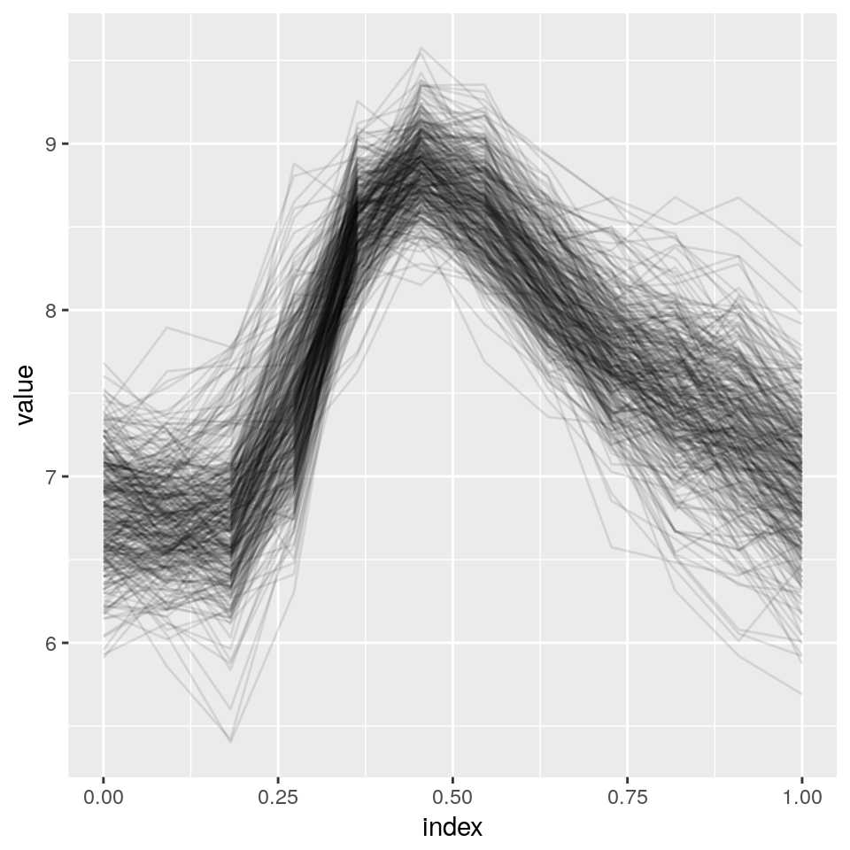
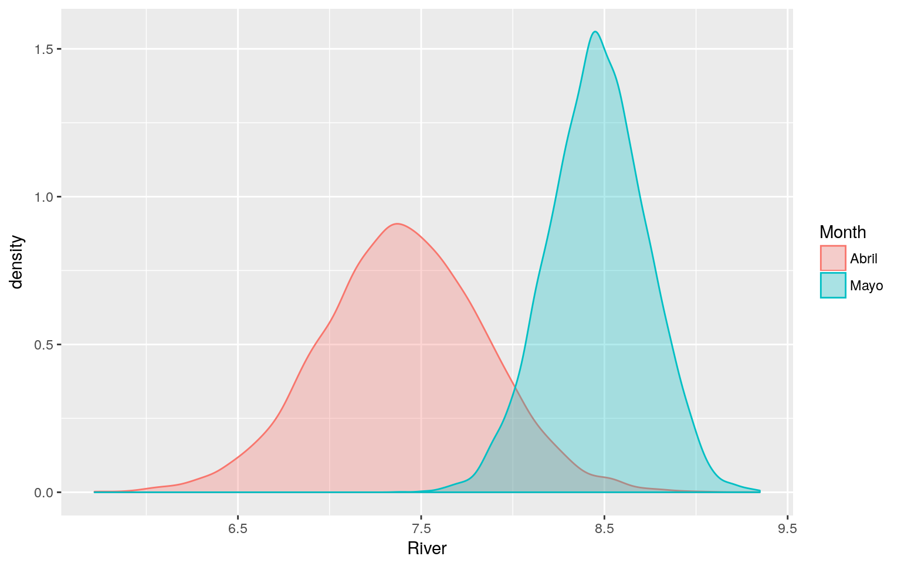

Se tiene información sobre el nivel medio mensual del río Fraser, en Canadá, desde Marzo de 1913 hasta Diciembre de 1990. Se pide estimar la probabilidad de que el río desborde superando los 10000 \(m^3/s\).
Los datos utilizados están disponibles en http://lib.stat.cmu.edu/datasets/fraser-river. Se tienen \(946\) observaciones de una variable (nivel medio mensual).
river <- read.table('fraser-river.txt'); head(river)## V1
## 1 485
## 2 1150
## 3 4990
## 4 6130
## 5 4780
## 6 3960En este trabajo se considerará que las observaciones provienen de un modelo PAR (Periodic AutoRegresive), como sugiere McLeod (1994).
La periodicidad de la serie puede observarse en la siguiente figura. Note que, naturalmente, el período de la serie es 12.
ts.plot(river[1:100,], ylab='Nivel del río', xlab='Meses')Es posible considerar también una tendencia a lo largo de los años, pero en este caso no parece haber tal relación.
En este caso, un gráfico ACF es muy informativo, pues permite estimar el orden de la dependencia entre los meses consecutivos.
acf(river)Todas las correlaciones entre meses son significativas. Aunque pudiese tratarse el problema analizando todas estas dependencias para cada mes, el modelo resultante sería demasiado complicado y posiblemente asociado a pobres estimaciones de los parámetros. Es lógico suponer que dada una fecha, el nivel del río ese mes dependerá de dos componentes: el nivel del río observado en el mes anterior y el nivel medio histórico del río ese mes. Se formulará este problema como sigue,
\[ y_t = \phi_{0s} + \phi_{1s} y_{t-1} + \varphi_{s}\epsilon_t, \quad \epsilon_t \sim N(0,1), \] donde \(s=1,2 \ldots 12\), \(t=1,2 \ldots n\). Los parámetros \(\phi_{0s}\) controlan el nivel medio del río en cada mes según el hitórico, mientras que \(\phi_{1s}\) determina la tendencia para cada año. Es lógico suponer que la varianza \(\varphi_s\) varía según el mes. Por ejemplo, el mes de Marzo suele ser poco lluvioso siempre, mientras que otros meses como Mayo pueden ser lluviosos o no.
El modelo jerárquico queda,
Para estimar los parámetros del modelo se ha utilizado la librería rstan de R.
Se ha aplicado previamente a los datos una transformación logarítmica. Esto se sugiere en McLeod (1994), cuando se tienen datos reales, con el fin de estabilizar la varianza.
# Centramos los datos para que las observaciones comiencen en el mes de enero.
flow <- log(c(as(river[-(1:10),],'double'),as(river[(1:10),],'double')))
library(refund)
library(refund.shiny)
library(tidyverse)## Loading tidyverse: ggplot2
## Loading tidyverse: tibble
## Loading tidyverse: tidyr
## Loading tidyverse: readr
## Loading tidyverse: purrr
## Loading tidyverse: dplyr## Conflicts with tidy packages ----------------------------------------------## filter(): dplyr, stats
## lag(): dplyr, statsriver.flow <- matrix(flow[1:936], ncol= 12, byrow = T)
as_refundObj(river.flow) %>%
ggplot(aes(x = index, y = value, group = id)) + geom_path(alpha = .2)Para estimar la probabilidad de que el río desborde simularemos muchas observaciones de la serie. La probabilidad de que el río desborde será estimada a través de la proporción de veces que el nivel medio ha sobrepasado el límite en las series simuladas.
El código del programa en Stan para el modelo considerado sería como sigue.
programa<-'
data{
// Datos externos
int<lower=1> N; // Tamaño de la serie
int<lower=1> N_new; // Tamaño de la serie a predecir
real<lower=0> y[N]; // Serie observada
real jan_new; // Valor (fijo) del mes de Enero de la serie a predecir
real mu;
real<lower=0> sigma;
real<lower=0> alpha;
real<lower=0> beta;
}
parameters{
// Parámetros a estimar
real phi0[12]; // Nivel histórico medio mensual
real phi1[12]; // Pendiente cada mes y el siguiente
real<lower=0> varphi2[12]; // Varianza del nivel medio por mes
}
transformed parameters{
// Transformaciones para notación
real<lower=0> varphi[12];
for(s in 1:12){
varphi[s]=sqrt(varphi2[s]);
}
}
model{
// Formulación del modelo
int season;
season = 2;
for(i in 2:N){
y[i] ~ normal( phi0[season]+phi1[season]*y[i-1], varphi[season] );
season=season+1;
if(season>12){
season=1;
}
}
for (s in 1:12){
phi0[s] ~ normal( mu, sigma ); // densidad a-priori normal
phi1[s] ~ normal( mu, sigma );
varphi2[s] ~ inv_gamma( alpha, beta ); // densidad a-priori inversa gamma
}
}
generated quantities{
// Valores simulados para estimar
vector[N_new] y_new;
int season;
season = 2;
y_new[1]=jan_new;
for(i in 2:N_new){
y_new[i] = normal_rng( phi0[season]+phi1[season]*y_new[i-1], varphi[season] );
season=season+1;
if(season>12){
season=1;
}
}
}
'Compilamos el código de Stan.
library(rstan)## Loading required package: StanHeaders## rstan (Version 2.14.1, packaged: 2016-12-28 14:55:41 UTC, GitRev: 5fa1e80eb817)## For execution on a local, multicore CPU with excess RAM we recommend calling
## rstan_options(auto_write = TRUE)
## options(mc.cores = parallel::detectCores())##
## Attaching package: 'rstan'## The following object is masked from 'package:tidyr':
##
## extractrstan_options(auto_write=T)
options(mc.cores=parallel::detectCores()-1)
programa_c<-stan_model(model_code=programa)Preparamos los parámetros del modelo.
N <- length(flow)
N_new <- 144
jan_new <- flow[1]
alpha <- 0.5
beta <- 0.5
mu <- 3
sigma <- 100
datos <- list(y=flow, N=N, N_new=N_new, jan_new=jan_new, mu=mu, sigma=sigma, beta=beta, alpha=alpha)Note que se ha considerado una a priori poco informativa para la media mensual del nivel del río y la pendiente entre meses consecutivos, pues se tiene una muestra de datos suficientemente grande para estimar estos parámetros. Para la varianza del nivel medio mensual también se ha considerado una a-priori poco informativa, equivalente a una observación con varianza \(1\).
Simulamos del modelo de Stan.
result <- sampling(programa_c, data=datos, iter=1500, chains=1)##
## SAMPLING FOR MODEL '0b66fe4f96586d41e76dcf5c9d9f2fee' NOW (CHAIN 1).
##
## Chain 1, Iteration: 1 / 1500 [ 0%] (Warmup)
## Chain 1, Iteration: 150 / 1500 [ 10%] (Warmup)
## Chain 1, Iteration: 300 / 1500 [ 20%] (Warmup)
## Chain 1, Iteration: 450 / 1500 [ 30%] (Warmup)
## Chain 1, Iteration: 600 / 1500 [ 40%] (Warmup)
## Chain 1, Iteration: 750 / 1500 [ 50%] (Warmup)
## Chain 1, Iteration: 751 / 1500 [ 50%] (Sampling)
## Chain 1, Iteration: 900 / 1500 [ 60%] (Sampling)
## Chain 1, Iteration: 1050 / 1500 [ 70%] (Sampling)
## Chain 1, Iteration: 1200 / 1500 [ 80%] (Sampling)
## Chain 1, Iteration: 1350 / 1500 [ 90%] (Sampling)
## Chain 1, Iteration: 1500 / 1500 [100%] (Sampling)
## Elapsed Time: 54.067 seconds (Warm-up)
## 45.9757 seconds (Sampling)
## 100.043 seconds (Total)Extraemos los resultados del modelo.
result.sim <- rstan::extract(result)
# Número medio de desbordamientos en la simulación.
mean(result.sim$y_new[,]>log(10000))## [1] 0.005555556Podemos observar las trayectorias simuladas.
river.flow <- matrix(t(result.sim$y_new[sample(1:500, 30),13:144]), ncol= 12, byrow = T)
as_refundObj(river.flow) %>%
ggplot(aes(x = index, y = value, group = id)) + geom_path(alpha = .1)
Podemos visualizar la función de densidad marginal del nivel medio del río en cierto mes.
dat <- data.frame(river.flow)
names(dat)<-month.name
plot.datos<-data.frame(Month=rep(c('Abril','Mayo'), each=nrow(dat)), River=c(dat$April, dat$May))
ggplot(plot.datos, aes(x=River, fill=Month, colour=Month))+geom_density(alpha=0.3)
Como se observa en la figura anterior, el modelo estimado capta la diferencia en el régimen de lluvias entre los meses de Abril y Mayo.
McLeod, A Ian. 1994. “Diagnostic Checking of Periodic Autoregression Models with Application.” Journal of Time Series Analysis 15 (2). Wiley Online Library: 221–33.